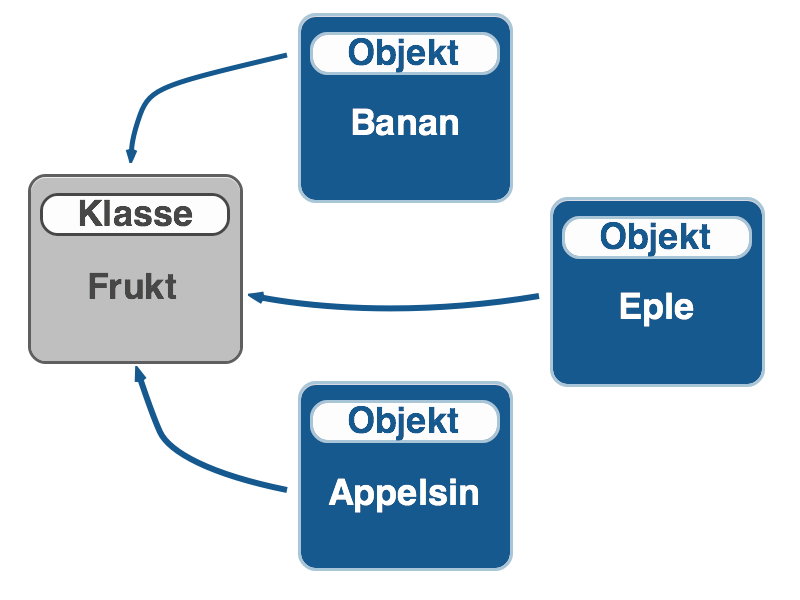
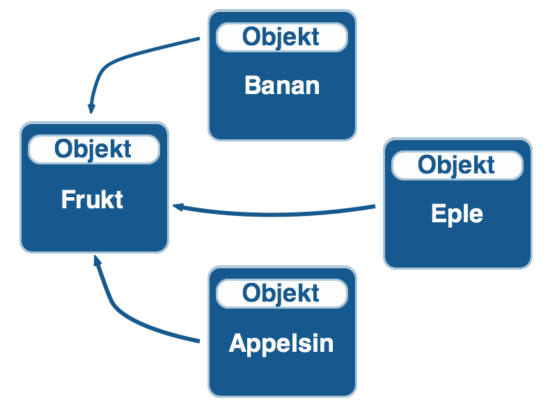

JavaScript for
ikke-JavaScriptere
Torstein Bjørnstad
8. september 2011
Torstein Bjørnstad
8. september 2011
Bruk {} for å lage objekter.
var tomtObjekt = {};
var person = {
fornavn: "Torstein",
firma: "Webstep"
};
person.fornavn // "Torstein"
person.adresse // undefined
person.adresse.privat // throw "TypeError"
person.adresse && person.adresse.privat // undefined
Opprett en array med []
var frukt = ["Banan", "Eple", "Appelsin"];
frukt.length // 3
frukt.push("drue");
frukt.length // 4
Strenger..*
var tekst = "Jeg er et objekt"; tekst.length //16 "Jeg er et objekt".length // 16
*En sannhet med modifikasjoner, men de fungerer som objekter
.. og funksjoner!
var hallo = function (){
return "Hallo!";
}
hallo(); // "Hallo!"
hallo.hei = "Hei!";
hallo.hei // "Hei!"
hallo() // "Hallo!"
Så hvor er de definert?
Alle objekter har en prototype-property som angir et objekt de arver properties og metoder fra.
Object.prototype
Array.prototype
String.prototype
Array.prototype og String.prototype har igjen Object.prototype som prototyp


Ettersom objektene er bygd opp av andre objekter, og ikke maler (klasser), resolves alt av properties runtime.
Dette gir oss muligheten for dynamisk arv, vha delegering.
var person2 = Object.create(person); person2.fornavn = "Jan Ove";
person.fornavn // "Torstein" person2.fornavn // "Jan Ove" person2.firma // "Webstep"
person.yrke = "Konsulent"; person2.yrke // "Konsulent" person2.adresse // undefined
Også på innebygde typer
String.prototype.reverse = function(){
var i = this.length, r = "";
while(i--) { r += this[i]; };
return r;
};
"JavaScript".reverse() // tpircSavaj
Objekter sjekker først på seg selv, så på sin prototyp, så på dens prototyp, hele veien til Object.prototype.
JavaScript har ikke globalt scope
Det globale scope blir gitt av runtimemiljøet, som regel browseren, og er et nytt objekt; window
<script> var globalVar = "min global"; globalVar // "min global" window.globalVar // "min global" window['globalVar'] // "min global" </script>
Variabler blir globale når
var
this redefineres ut ifra hvor den brukes.
Tenk over hvilken kontekst du er i, eller kommer til å være i.
var funk = eple.visFarge; funk() // ?
setTimeout(eple.visFarge, 500); // ?
Alternativt, sett this med .call():
var funk = eple.visFarge(); funk.call(eple);
Definer en ny funksjon med:
function add(a, b){
return a + b;
}
function add(){
return arguments[0] + arguments[1];
}
Og disse er funksjonelt identiske
function add(){
// stuff
}
var add = function (){
//stuff
}
Funksjoner som bare skal brukes ett sted kan godt defineres kun der, noe som kan gi mer lesbar kode
function doSomething(item) {
alert(item);
}
forEach(arr, doSomething);
Kan også skrives som
forEach(arr, function(item){ alert(item); });
Alle som har jobbet med Resharper i VS har nok sett advarselen: Access to modified closure
for (var i = 0; i < 5; i++) {
$('box' + i).onclick = function (){
alert("Du klikket: " + i);
};
}
Hva skjer her?
Løsning
for (var i = 0; i < 5; i++) {
$('box' + i).onclick = function (index){
return function (){
alert("Du klikket: " + index);
};
}(i);
}
var wrapper = function() {
var secret = "secret string";
var inaccessible = "inaccessible string";
return function(){
return secret;
}
}();
Legg merke til () på slutten
var chain = (function(){
var api;
function start(){
document.write('starter..');
return api;
}
function stopp(){
document.write('stopper');
}
api = {
start: start,
ogStopp: stopp
};
return api;
})();
chain.start().ogStopp(); // starter..stopper
function Fruit(type, weight){
this.type = type;
this.weight = weight;
this.biteSize = 100;
this.eat = function(){
this.weight = this.weight - this.biteSize;
return this.weight;
}
}
var apple = new Fruit('apple', 200);
apple.type // 'apple'
apple.eat() // 100
Med utnyttelse av arv
function Fruit(type, weight){
this.type = type;
this.weight = weight;
this.biteSize = 100;
}
Fruit.prototype.eat = function(){
this.weight = this.weight - this.biteSize;
return this.weight;
}
Skaper færre instanser av eat-metoden, og gjør at vi lettere kan endre i ettertid
Med private property og function
function Fruit(type, weight){
var secret = 'sssh';
var doSomething = function (){
// do stuff
};
this.type = type;
this.weight = weight;
this.biteSize = 100;
this.tellSecret = function (){
return "It starts with " + secret[0];
};
}
Fruit.prototype.eat = function(){
this.weight = this.weight - this.biteSize;
return this.weight;
}
Med private property og function i forhold til .Net
function Fruit(type, weight){
var secret = 'sssh'; // private field
var doSomething = function (){ // private function
// do stuff
};
this.type = type; // public props
this.weight = weight;
this.biteSize = 100;
this.tellSecret = function (){ // public method
return "It starts with " + secret[0];
};
}
Fruit.prototype.eat = function(){ // class method
this.weight = this.weight - this.biteSize;
return this.weight;
}
var myNamespace = (function (){
// Define private variables
var var1, var2;
// Define functions
function doStuff(){
}
function doOtherStuff(){
alert('hello');
}
// Define public interface
return {
do: doStuff
};
})();
MYAPP = MYAPP || {};
MYAPP.Module1 = (function (){
// internal stuff
return {
// public stuff
};
})();
MYAPP = MYAPP || {};
MYAPP.Module2 = (function (){
// internal stuff
return {
// public stuff
};
})();
=== og !== istedet for == og !=
new String(), new Number() eller new Boolean(). Unngå new Object() og new Array()
new. (Eller ikke bruk new)
void
Bruk JSLint eller JSHint. Begge fås som plugins til Visual Studio, og analyserer JavaScriptfilene ved bygg eller lagring.
Microsoft Ajax Minifier minifiserer både JavaScript og CSS-filer, og integreres lett i byggeprosessen.
Har også en litt nifty støtte for ressursfiler.
Analyser nettsiden din med Google Page Speed for å finne forbedringspunkter. Innebygd i Chrome.
Oppgrader til Resharper 6. Kommer med code analysis, navigering, søk, autocomplete. Ikke helt der ennå, men det kommer seg.
JSLint will hurt your feelings.